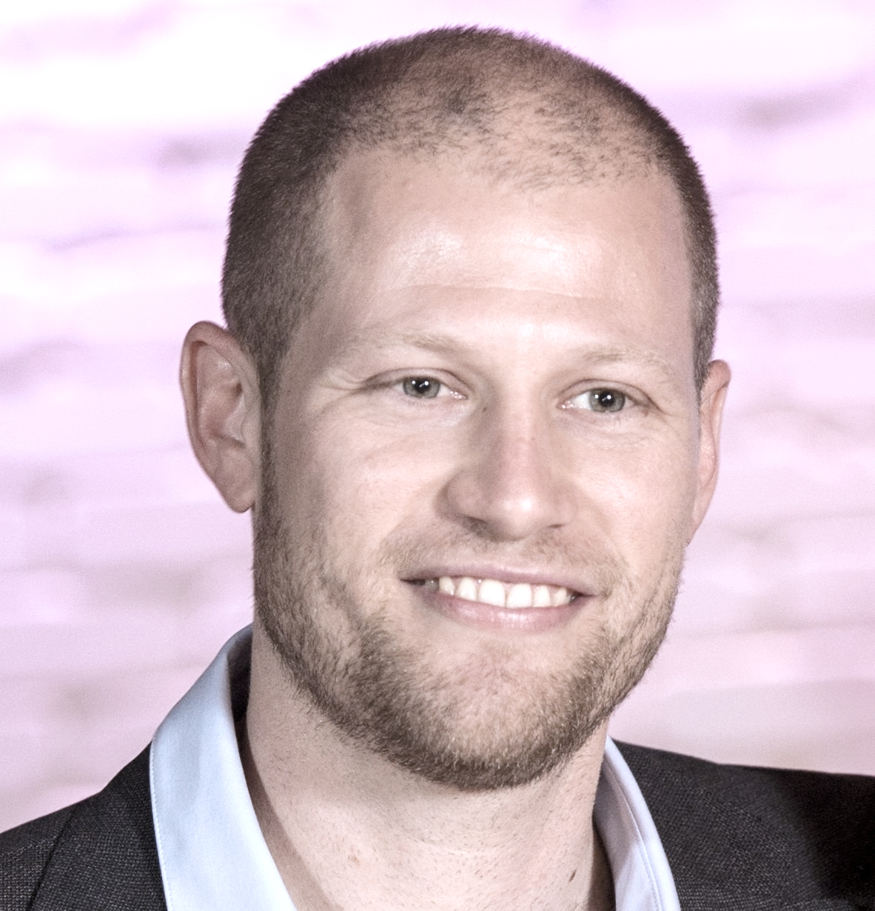

Helping organizations become what their next stage of growth requires.
Growth creates complexity. Complexity creates debt — in management, process, governance, and product. My work is closing that gap faster than it opens, across founder transitions, international expansion, and business-model change — from industrial technology to cybersecurity to legal tech.
Organizations don't fail just because their industry changes.
They fail because their capability doesn't evolve at the same pace. Twenty years ago the lever was internationalization. Today it's AI. The underlying work — closing the gap between growth and institutional capability — hasn't changed.
Growth is not free. Every growth decision creates debt somewhere else — in management, process, governance, or product. When institutionalization keeps pace, that debt stays manageable. When it doesn't, it compounds until the organization can no longer absorb further change.
Not every company is fighting the same battle. Some need to execute better. Some need the basics — a management layer, real infrastructure — before they can grow further. Others need to extend a healthy core before its ceiling arrives, or rebuild the business while the current one is still running. Diagnosing which of these an organization is actually facing, before prescribing a fix, is most of the job.
Azami Global: founder-led services company to multi-product platform.
Azami is my strongest case study — not the whole story. As CEO, I led the transformation from a founder-led, transactional IP services company into a professionally managed, multi-product technology platform, during a period of rapid AI adoption in the sector.

Daniel Tjørnelund
Three-Time CEO · Executive · Educator
Tel Aviv, Israel
Originally from Denmark
I grew up in Denmark and built my career in Israel — two places with very different instincts for building companies. That tension has shaped how I work: Scandinavian structure meeting Israeli resourcefulness.
Organizations rarely fail because their industry changes. They fail because organizational capability doesn't evolve at the same pace. I've led three CEO tenures — a technology startup at DTU, my own company (BM Engineering, founded through exit), and most recently Azami Global — alongside senior commercial roles building international business from the ground up.
For the past decade, I've also built and taught the academic side of this: ten full courses, independently designed and faculty-approved, spanning entrepreneurship, international business, and scale-up strategy at CoMAS and Reichman University. That work sharpens the operating side as much as the operating side sharpens the teaching.
View track record →- Three-time CEO — technology startup (DTU), founder-led BM Engineering (built to exit), and Azami Global
- CEO, Azami Global (LegalTech / Data & AI), 2021–2026 — founder-led services to multi-product platform
- Commercial leadership: VP & Board Advisor, Cybersecurity → Sales Leadership, Fintech SaaS → International Bizdev, Industrial Technology → Sales Engineer, Industrial Technology
- M&A, post-merger integration, and international joint ventures across EMEA, North America, and Asia
- Transformation themes: founder → institutional · services → platform · local → global · transactional → recurring
- Adjunct Lecturer since 2017 — Entrepreneurship, Scale-Ups, and International Business (BA & MBA)